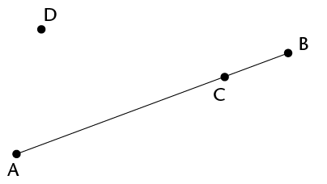

Term revision and assessment
Revision
Show all your steps in your working.
Algebraic expressions
- Simplify:
- \(x^2 + x^2\)
- \(m + m \times m + m\)
- \(5ab - 7a^2 - 2a^2 + 11ba\)
- \((3ac^2)(-4a^2b)\)
- \((-4a^{2}b^{3})^3\)
- \((\frac{-6x^2yz^4}{3xyz})^2\)
- \(\sqrt{\frac{100x^4}{81y^{64}}}\)
- \(\sqrt{16c^2 + 9c^2}\)
- \((2x + 3x)^3\)
- \(3x^2(4x^3 - 5)\)
- \((4a - 7a)(a^2 - 2a - 5)\)
- \(\frac{9c^2de^3}{3c^2d^2e^2f}\)
- \(\frac{6b^2 - 3b^2}{2b^2}\)
- \(\frac{10x^2 - 5x + 1}{5}\)
- \(\frac{14x -21x^2}{7x^2}\)
- \(x^2 + x^2\)
- Simplify the following
expressions:
- \( 3(a+ 2b) - 4(b - 2a)\)
- \( 3 - 2(5x^2 + 6x - 2)\)
- \( 2x(x^2 - x + 1) - 3(4 - x)\)
- \( (2a + b - 4c) - (5a + b - c)\)
- \(a\{2a^2[4 + 2(3a + 1)] - a\}\)
- \( 3(a+ 2b) - 4(b - 2a)\)
- If \(a = 0, ~b = -2\), and \(c = 3\), determine the
value of the following without using a calculator. Show all
working:
- \(b^2c \)
- \(2b - b(ab - 5bc) \)
- \(\frac{2b + c - 10a}{3c^2}\)
- \(b^2c \)
- If \(y = -2\), find
the value of \(2y^3 - 4y + 3\)
Algebraic equations
- Solve the following
equations:
- \( -x = -7\)
- \( 2x = 24\)
- \( 3x - 6 = 0\)
- \( 2x + 5 = 3\)
- \( 3(x - 4) = -3\)
- \( 4(2x - 1) = 5(x - 2)\)
- \( -x = -7\)
- Sello is \(x\) years old. Thlapo is 4 years
older than Sello. The sum of their ages is 32.
- Write this information in an equation
using \(x\) as the
variable.
- Solve the equation to find Thlapo's
age.
- Write this information in an equation
using \(x\) as the
variable.
- The length of a
rectangle is \(2x + 8\) cm and the width is 2 cm. The area of the rectangle is 12
cm\(^2\).
- Write this information in an equation
using \(x\) as the
variable.
- Solve the equation to determine the
value of \(x\).
- How long is the rectangle?
- Write this information in an equation
using \(x\) as the
variable.
- The area of a
rectangle is \((8x^2 + 2x)\) cm\(^2\), and the length is
\(2x\) cm. Determine the
width of the rectangle in terms of \(x\), in its simplest form.
Construction of geometric figures
Do not erase any construction arcs in these questions.
-
- Construct \(\hat{DEF} = 56^{\circ}\) with your ruler,
pencil, and a protractor. Label the angle correctly.
- Bisect \(\hat{DEF}\) using only a compass, ruler, and
pencil (no protractor).
- Construct \(\hat{DEF} = 56^{\circ}\) with your ruler,
pencil, and a protractor. Label the angle correctly.
- Here is a rough sketch of a
quadrilateral (NOT drawn to scale):

Construct the quadrilateral accurately.
- Using only a compass, ruler
and pencil, construct:
- A line through C perpendicular to AB
- A line through D perpendicular to AB

- Construct and label the
following triangles and quadrilaterals:
- Triangle ABC, where AB = 8 cm; BC = 5,5
cm and AC = 4,9 cm
- Rhombus GHJK, where GH = 6 cm and \( \hat{G} = 50^{\circ}\)
- Triangle ABC, where AB = 8 cm; BC = 5,5
cm and AC = 4,9 cm
- Here is a rough sketch of
triangle FGH (NOT drawn to scale):

Using a ruler, pencil, and protractor, construct and label the triangle accurately.
- Construct an angle of
120° without using a protractor.
Geometry of shapes
- True or false: all
equilateral triangles, no matter what size they are, have
angles that equal 60°.
-
- In a triangle, two of the angles are
35° and 63°. Calculate the size of the
third angle.
- In a quadrilateral, one of the angles is
a right angle, and another is 80°. If the remaining
two angles are equal to each other, what is the size of
each?
- In a triangle, two of the angles are
35° and 63°. Calculate the size of the
third angle.
- If triangle MNP has
\(\hat{M} = 40^{\circ}\) and \(\hat{N} = 90^{\circ}\), what is the size of
\(\hat{P}\)?
- Write definitions of the
triangles in the table below.
Equilateral triangle
Isosceles triangle
Right-angled triangle
- The following list gives the
properties of three quadrilaterals, A, B and C.
- Give the special names of each of shapes
A, B and C.
Quadrilateral A: The opposite sides are equal and parallel.
Quadrilateral B: The adjacent sides are equal, while the opposite sides are not equal.
Quadrilateral C: All of the angles are right angles.
-
What property must Quadrilateral A also
have to make it a rhombus?
- What property must Quadrilateral A also
have to make it a rectangle?
- Give the special names of each of shapes
A, B and C.
- Determine the size of \(\hat{V}\). Show all steps of your working and give
reasons.

- Determine the size of \(x\). Give reasons.

Geometry of straight lines
- Study the diagram
alongside:

- Name an angle that is vertically
opposite to \(\hat{EHG}\).
- Name an angle that is corresponding to \(\hat{EHG}\).
- Name an angle that is co-interior with \(\hat{EHG}\).
- Name an angle that is alternate to\(\hat{EHG}\).
- Name an angle that is vertically
opposite to \(\hat{EHG}\).
- Determine the size of
\(x\) in each of the following diagrams. Show all steps of
working and give reasons.
-

-

-

-

- Are line segments AB and DE parallel?
Prove your answer.

-
Assessment
In this section, the numbers in brackets at the end of a question indicate the number of marks the question is worth. Use this information to help you determine how much working is needed. The total number of marks allocated to the assessment is 75.
- Simplify the following
expressions:
- \(5x^2 - 6x^2 + 10x^2\)
- \(4(3x - 7) - 3(2 + x)\)
- \((-2a^2bc^3)2 \div 4abcd\)
- \(\frac{2x(3x-15)}{3x}\)
- \(\sqrt[3]{108d^15 \div 4d^6}\)
- \(2[3x^2 - (4 - x^2)] - [9 + (4x)^2]\)
- \(5x^2 - 6x^2 + 10x^2\)
- Find the value of \(a\) if \(b = 3,~ c = -4\) and \(d = 2\):
- \(a = b + c \times d\)
- \(ab^2 = 2c - d \div 2\)
- \(a = b + c \times d\)
- Solve the following
equations:
- \( -7x = 56\)
- \(4(x + 3) = 16\)
- \( -7x = 56\)
- Sipho, Fundiswa and
Ntosh are brothers. Sipho earns Rx per month; Fundiswa
earns R1 000 more than Sipho per month, and Ntosh earns double
what Sipho earns. If you add their salaries together you get a
total of R27 000.
- Write this information in an
equation using \(x\). (2)
- Solve the equation to find
how much Fundiswa earns per month. (2)
- Write this information in an
equation using \(x\). (2)
- Construct the
following figure using only a pencil, ruler and compass. Do not
erase any construction arcs.
- An angle of 60°
(2)
- The perpendicular bisector of
line VW, where VW = 10 cm
- Triangle KLM, where KL = 8,3
cm; LM = 5,9 cm and KM = 7 cm
-
Parallelogram EFGH, where E = 60°, EF = 4,2 cm and
EH = 8 cm
- An angle of 60°
(2)
-
- What is/are the
property/properties that make a rhombus different to a parallelogram?
(1)
- True or false: a rectangle is
a special type of parallelogram. (1)
- What is/are the
property/properties that make a rhombus different to a parallelogram?
(1)
- Determine the size of
x in each figure. Show all the necessary steps and give
reasons.
-
- Study the following diagram.
Then answer the questions that follow:

- Write
down the correct word to complete the sentence: \(x\) and
\(y\) form a pair of __________________ angles (1)
- Write down an equation that
shows the relationship between angles \(x\) and \(y\).
(1)
- Write
down the correct word to complete the sentence: \(x\) and
\(y\) form a pair of __________________ angles (1)
- Determine the size of
\(x\), showing all necessary steps and giving reasons for
all statements that use geometrical theorems:
-
- Consider the
following diagram, in which it is given: \(\hat{DEI} = 30^{\circ}, ~DE = EI, ~DF
\parallel IG\), and \(GH = IH\).

- Determine, with reasons, the
size of \(\hat{H}\). (6)
- Which of the following
statements is correct? Explain your answer. (2)
- \( \triangle DEI\) is similar to
\( \triangle GHI\)
- \( \triangle DEI\) is congruent to
\( \triangle GHI\)
- We cannot determine a relationship
between \( \triangle DEI\) and \( \triangle GHI\) since there is not
enough information given.
Statement ______ is correct because
- \( \triangle DEI\) is similar to
\( \triangle GHI\)
- Determine, with reasons, the
size of \(\hat{H}\). (6)